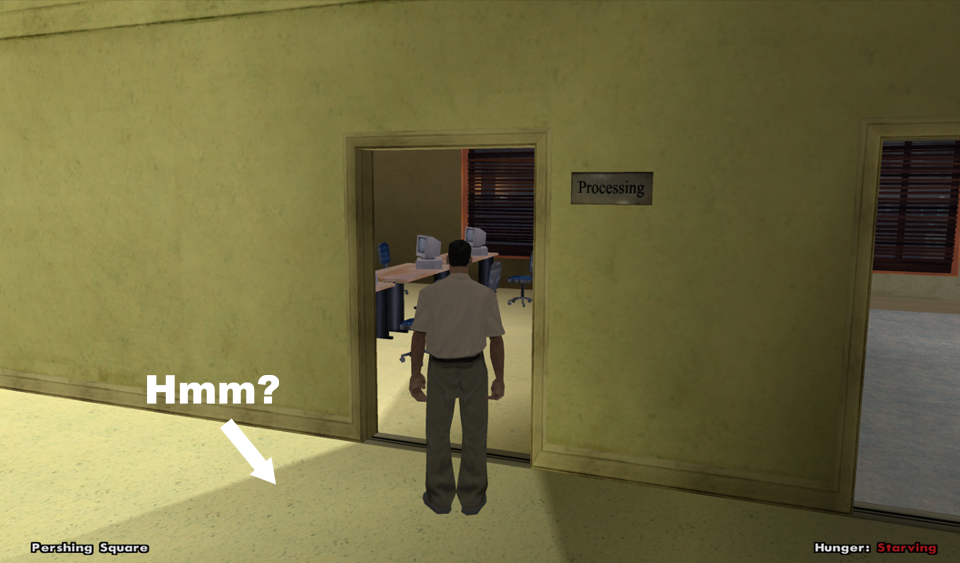

Posts: 1,180
Threads: 55
Joined: Apr 2005
Reputation:
0
The more I played around with vertex color baking in blender, the more convinced I was that the feature is broken. At least in my blender version (2.71).
The only good way to do it is probably using 3dsmax radiosity. The lighting in SA is all precalculated/baked, but it seems the 3dsmax radiosity is ray traced, so it looks better than dynamic lighting in a lot of cases.
Posts: 1,180
Threads: 55
Joined: Apr 2005
Reputation:
0

When you bake the lighting to vertex colors, it'll preserve any ray tracing.
The instant transitions are done with timed objects, not vertex colors.
The world objects in GTA3/Vice City only have a single set of vertex colors. When R* wanted change an object to night colors, there are 2 seperate models and they'd use timed objects.
In San Andreas, every object can have two seperate vertex color layers, and these are automatically blended as time passes in the game. There are still timed objects used to add lights to windows on big buildings etc.